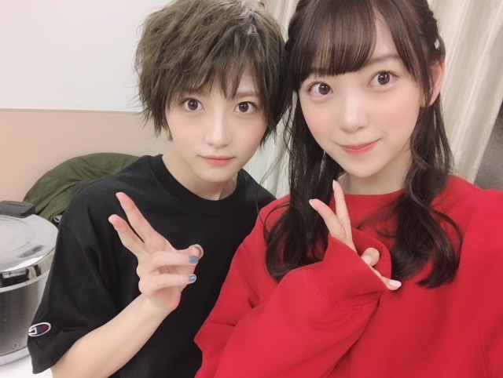

2018/1216Sun優しさと強さ
若月さんが先日のセレモニーで乃木坂46を卒業されました。私達2期生が加入したての頃、
プリンシパル公演の休憩中に先輩達に初めて挨拶をしにいった時、緊張で固まって立ち尽くしていた私達の方に若さんが来てくれて、よろしくねって言ってくださったあの瞬間。嬉しさとドキドキした気持ち。一生忘れません。
私達2期生を一番にメンバーとして、後輩として受け入れてくださったのが若さんでした。
最後のセレモニーでも2期研究生曲のボーダーを選んでくださったことも本当に本当に嬉しくて。
3期生が活躍して4期生も入ってくる今、2期生も頑張らなきゃって。見てくれてる人応援してくれてる人の為にも改めて頑張りたいって思えました。
どんなことにも真面目に、地に足をつけて自分や周りを客観視しながら目標に立ち向かう姿は本当にかっこいいし無邪気にくしゃっと笑う顔も大好きだし私が言うことに優しくツッコミをしてくれたり、バレッタの時から今までずっと変わらず優しく接してくださいました。
私も若さんみたいにさりげなく誰かの力になれるような気遣いのできる人になりたいです。
卒業発表されてから何回かメールはしたけれど
ライブ終わりに、あんたは大丈夫だよって
肩をポンっとしてくたさったのが余計に切なくて寂しくて...
でもそんな若さんの優しさや力強さまっすぐさを私も大切にもっともっと頑張ろうって思いました。
若さん！お疲れ様でした！
アイドルの若さんも大好きでしたがお芝居をしている姿も大好きなのでこれからのご活躍も楽しみにしています☺︎
ありがとうございました☺︎

敬意も込めて、、ずっとずっと大好きです。
2018/12/16 18:06
コメント(334)
2人ともかわいー
とてもかわいいです これからもずっと応援してます！
2期生頑張ってください！
2期生頑張ってください！
ブログ更新ありがとう
未央奈ちゃん,,,卒業するときめっちゃ悲しいよね
未央奈ちゃんは、ずっといて欲しいな
未央奈ちゃん,,,卒業するときめっちゃ悲しいよね
未央奈ちゃんは、ずっといて欲しいな
2期まじで応援してます！！！
頑張れ！！
2期の個性あふれるみんなが大好きです！！！！！
頑張れ！！
2期の個性あふれるみんなが大好きです！！！！！
若さんの卒業寂しいですね( ＞Д＜；)
るいも若さんとの思い出があるだけに
寂しいけど若様には新しい人生
歩んで頑張ってほしいです
また未央奈の握手会行くね～(=^ェ^=)
るいも若さんとの思い出があるだけに
寂しいけど若様には新しい人生
歩んで頑張ってほしいです
また未央奈の握手会行くね～(=^ェ^=)
２期生( o≧д≦)oｶﾞﾝﾊﾞﾚｰ!!
更新ありがとう！
おれは堀ちゃんを朝見て元気だして行くようにしてるから堀ちゃんもすごく力になってるよ！
これからも頑張って！◢⁴⁶◢⁴⁶◢⁴⁶◢⁴⁶◢⁴⁶◢⁴⁶◢⁴⁶◢⁴⁶◢⁴⁶◢⁴⁶◢⁴⁶◢⁴⁶◢⁴⁶◢⁴⁶◢⁴⁶◢⁴⁶◢⁴⁶◢⁴⁶◢⁴⁶◢⁴⁶◢⁴⁶◢⁴⁶◢⁴⁶◢⁴⁶◢⁴⁶◢⁴⁶◢⁴⁶◢⁴⁶◢⁴⁶◢⁴⁶◢⁴⁶◢⁴⁶◢⁴⁶◢⁴⁶◢⁴⁶◢⁴⁶◢⁴⁶◢⁴⁶◢⁴⁶◢⁴⁶◢⁴⁶◢⁴⁶◢⁴⁶◢⁴⁶◢⁴⁶◢⁴⁶◢⁴⁶◢⁴⁶◢⁴⁶◢⁴⁶◢⁴⁶◢⁴⁶◢⁴⁶◢⁴⁶◢⁴⁶◢⁴⁶◢⁴⁶◢⁴⁶◢⁴⁶◢⁴⁶◢⁴⁶◢⁴⁶◢⁴⁶◢⁴⁶◢⁴⁶◢⁴⁶◢⁴⁶◢⁴⁶◢⁴⁶◢⁴⁶◢⁴⁶◢⁴⁶
おれは堀ちゃんを朝見て元気だして行くようにしてるから堀ちゃんもすごく力になってるよ！
これからも頑張って！◢⁴⁶◢⁴⁶◢⁴⁶◢⁴⁶◢⁴⁶◢⁴⁶◢⁴⁶◢⁴⁶◢⁴⁶◢⁴⁶◢⁴⁶◢⁴⁶◢⁴⁶◢⁴⁶◢⁴⁶◢⁴⁶◢⁴⁶◢⁴⁶◢⁴⁶◢⁴⁶◢⁴⁶◢⁴⁶◢⁴⁶◢⁴⁶◢⁴⁶◢⁴⁶◢⁴⁶◢⁴⁶◢⁴⁶◢⁴⁶◢⁴⁶◢⁴⁶◢⁴⁶◢⁴⁶◢⁴⁶◢⁴⁶◢⁴⁶◢⁴⁶◢⁴⁶◢⁴⁶◢⁴⁶◢⁴⁶◢⁴⁶◢⁴⁶◢⁴⁶◢⁴⁶◢⁴⁶◢⁴⁶◢⁴⁶◢⁴⁶◢⁴⁶◢⁴⁶◢⁴⁶◢⁴⁶◢⁴⁶◢⁴⁶◢⁴⁶◢⁴⁶◢⁴⁶◢⁴⁶◢⁴⁶◢⁴⁶◢⁴⁶◢⁴⁶◢⁴⁶◢⁴⁶◢⁴⁶◢⁴⁶◢⁴⁶◢⁴⁶◢⁴⁶◢⁴⁶
こんばんは
若月さんとの思い出深いエピソード、
若月さんに対する未央奈さんの想い、
私にも凄く伝わりました。
ありがとう︎︎☺︎！
若月さんは、
情の深い思いやりのある人ですね。
女優“若月佑美”のご活躍を
未央奈さんと一緒で、私も
楽しみにしています︎︎☺︎︎︎☺︎
若月さんと未央奈さんの写真、
良い写真♡
若月さんとの思い出深いエピソード、
若月さんに対する未央奈さんの想い、
私にも凄く伝わりました。
ありがとう︎︎☺︎！
若月さんは、
情の深い思いやりのある人ですね。
女優“若月佑美”のご活躍を
未央奈さんと一緒で、私も
楽しみにしています︎︎☺︎︎︎☺︎
若月さんと未央奈さんの写真、
良い写真♡
みおちゃんブログ更新ありがとう！
体調は少し良くなったかな？( ´•̥⌓•̥` )
若様の言葉がすごく身に染みる。
2期生にとって若様の偉大さが
セレモニー観ててすごく感じた。
ボーダー観てた時号泣したよ。
これからもずっとずっと
応援しています！
未央奈に出会えて良かった！
ありがとう⋆⸜ᵀᴴᴬᴺᴷ ᵞᴼᵁ⸝⋆
体調は少し良くなったかな？( ´•̥⌓•̥` )
若様の言葉がすごく身に染みる。
2期生にとって若様の偉大さが
セレモニー観ててすごく感じた。
ボーダー観てた時号泣したよ。
これからもずっとずっと
応援しています！
未央奈に出会えて良かった！
ありがとう⋆⸜ᵀᴴᴬᴺᴷ ᵞᴼᵁ⸝⋆
さすが、若って感じですね。
若が選んだ2期生の曲のボーダーはほんとに大好きで
若も好きだし、曲も好きだし、最高の思い出になりました！
3期生が活躍していますが、2期生の皆さんも未央奈を筆頭に
頑張ってください！応援してます！！2期生大好きです！！
なぁちゃんももう少しで卒業で寂しいけれど、
これからも頑張ってください！
若が選んだ2期生の曲のボーダーはほんとに大好きで
若も好きだし、曲も好きだし、最高の思い出になりました！
3期生が活躍していますが、2期生の皆さんも未央奈を筆頭に
頑張ってください！応援してます！！2期生大好きです！！
なぁちゃんももう少しで卒業で寂しいけれど、
これからも頑張ってください！
若様がこれだけメンバー沢山に愛されていたかと思うとやっぱりとても寂しく感じます。
堀さん
こんばんは
舞台あさひなぐの
宮路真春 対 一堂寧々
のツーショットですね
もう、1年前の事になるんですね
若月も堀さんも
スゴいカッコよかったです
寒い日が続きますが
体調に気をつけて下さい。
応援しています
こんばんは
舞台あさひなぐの
宮路真春 対 一堂寧々
のツーショットですね
もう、1年前の事になるんですね
若月も堀さんも
スゴいカッコよかったです
寒い日が続きますが
体調に気をつけて下さい。
応援しています
みおなの気持ち伝わったよ～(>_<)
卒業さみしいね、、、未央奈なら大丈夫だよねきっと。 それからこの間FNSでサイリウムの色気づいてくれてありがとう☺️ 嬉しかった〜〜！！！ また会いに行ける時行くね
若がいなくなってしばらく経った今、こうやって若との思い出やメンバー目線での若の姿を知ることができて本当に嬉しいです、ありがとう。絶賛ロス中だけど、写真見て元気出ました！
これから2期生が良さが爆発すると思ってます！！頑張れ〜
２期生との初対面のエピソード。
若の精神性の高さを示す、語り継ぐべき話で
すよね。若自身もその時の気持ちを持ち続け
卒業するまで活動して、研究生であった
メンバーの事を最後の最後まで忘れていなか
った事には、本当に敬服いたしました。
みおなちゃんはじめ、２期生の中に頑張ろう
という気持ちを芽生えさせたのは、
若の置き土産でしょうか。
みおなちゃんの乃木坂での活動の覚悟を
若はわかっているようで、卒業での肩ポンは
嬉しかった瞬間ではなかったでしょうか。
若の精神性の高さを示す、語り継ぐべき話で
すよね。若自身もその時の気持ちを持ち続け
卒業するまで活動して、研究生であった
メンバーの事を最後の最後まで忘れていなか
った事には、本当に敬服いたしました。
みおなちゃんはじめ、２期生の中に頑張ろう
という気持ちを芽生えさせたのは、
若の置き土産でしょうか。
みおなちゃんの乃木坂での活動の覚悟を
若はわかっているようで、卒業での肩ポンは
嬉しかった瞬間ではなかったでしょうか。
ブログの更新ありがとう！
昨日はマスクをしながらの握手会で、5部に関しては欠席みたいだったから、ちょっと心配してるよ。
一日も早い完全復帰を待ってるよ！
若月さんは視点を変えられる人だよね。
それに優しいから、色んな人を支えて癒してってことができるんだろうなー
本当に乃木坂は人間性が素晴らしい人が多い！
残されたものとして、若月さんが昔いたところってことを、周りにより自慢できるようにもっともっと盛り上げていきたいね！
いっぱいいっぱい応援するし、未央奈の活躍の右肩上がりを期待して、見守っているよ！
昨日はマスクをしながらの握手会で、5部に関しては欠席みたいだったから、ちょっと心配してるよ。
一日も早い完全復帰を待ってるよ！
若月さんは視点を変えられる人だよね。
それに優しいから、色んな人を支えて癒してってことができるんだろうなー
本当に乃木坂は人間性が素晴らしい人が多い！
残されたものとして、若月さんが昔いたところってことを、周りにより自慢できるようにもっともっと盛り上げていきたいね！
いっぱいいっぱい応援するし、未央奈の活躍の右肩上がりを期待して、見守っているよ！
未央奈、若月だけの内容ブログありがとう。若月推しとして嬉しいです。若月と同じく、未央奈なら大丈夫だと俺も思うよ(^^)
みおなー！
ほんとに二人とも可愛い！
寒いから体調に気をつけてがんばってね！
ほんとに二人とも可愛い！
寒いから体調に気をつけてがんばってね！
ボーダー良かったね！
わたしも嬉しくなった！
さすが若〜！！みゅうみゅぅううう！！
最後の2Sめっちゃカレカノ感溢れてる（笑）
エクステいい感じね〜！
友達ロング未央奈可愛いから
未央奈推しになりそ〜って言ってた♡
いろんな髪型似合うのいいねッ
紅白、バスラ、卒コン楽しみ〜！
体調に気をつけてね！！
ばいぃ
ブログ更新ありがとうございます。
握手会お疲れ様でした！
体調は大丈夫ですか？
若、ありがとう！
みおな
大好きです
握手会お疲れ様でした！
体調は大丈夫ですか？
若、ありがとう！
みおな
大好きです
心に残っている人ほど別れの時は悲しくなるものだよね。
そんな人から大丈夫って言われて頑張ろうと思うのはいいことだね。
これからもメンバー同士心の繋がりを大切にして頑張ってな。
年末年始忙しくなるけど体調管理に気を付けながら。
未央奈のこと大好きだよヽ(・∀・)ノ
そんな人から大丈夫って言われて頑張ろうと思うのはいいことだね。
これからもメンバー同士心の繋がりを大切にして頑張ってな。
年末年始忙しくなるけど体調管理に気を付けながら。
未央奈のこと大好きだよヽ(・∀・)ノ
二期生応援してる！これからも！！
ブログ更新ありがとう！！！
いつもお疲れ様！
お大事にね！
いつもお疲れ様！
お大事にね！
さりげなく誰かの力になれるっていいね。自分も頑張ります。
２期生にとって大事なひとだったんだね…。過去の優しさも悲しさも消えないですもんね。わたしも若のこと大好きでした。
3期生が活躍してるといっても、２期なしの乃木坂は想像できない。その位わたしにとって２期はだいすきな人たちです！４期が入ってきても、ずっと２期いちばんで応援します☺みおなも研究生とは違う意味でずっとたいへんだったこと思うのにいつも強くてかっこいいよ☺☺これからも頑張って！
3期生が活躍してるといっても、２期なしの乃木坂は想像できない。その位わたしにとって２期はだいすきな人たちです！４期が入ってきても、ずっと２期いちばんで応援します☺みおなも研究生とは違う意味でずっとたいへんだったこと思うのにいつも強くてかっこいいよ☺☺これからも頑張って！
未央奈ちゃん、今日もお疲れ様です＞＜ゞ
誰よりも二期生の皆を気にかけてくれて
未央奈ちゃん自身、二期生初の選抜入りをして
ひょっとしたら肩身の狭い思いした中、
優しく接してくれたのが佑美ちゃんなんだ！
未央奈ちゃんが先頭になって
二期生全体で歩んでいき、へこたれそうなメンバーがいたら優しく声を掛けて
再び全体で歩んでいけるような気遣い出来る人になれるといいね
その気遣いの姿勢が佑美ちゃんへの最大の恩返しじゃないかって思ってます
『その力強い目力の先に何を見据える』
未央奈ちゃんの力強い目力の見据える先に
二期生全員の素晴らしい未来が待っていますように
誰よりも二期生の皆を気にかけてくれて
未央奈ちゃん自身、二期生初の選抜入りをして
ひょっとしたら肩身の狭い思いした中、
優しく接してくれたのが佑美ちゃんなんだ！
未央奈ちゃんが先頭になって
二期生全体で歩んでいき、へこたれそうなメンバーがいたら優しく声を掛けて
再び全体で歩んでいけるような気遣い出来る人になれるといいね
その気遣いの姿勢が佑美ちゃんへの最大の恩返しじゃないかって思ってます
『その力強い目力の先に何を見据える』
未央奈ちゃんの力強い目力の見据える先に
二期生全員の素晴らしい未来が待っていますように
みおな～
体調大丈夫？
体調大丈夫？
堀ちゃん！更新ありがとう！
そうね～、若様の卒業はなんか悲しいよね～
｢今日から俺は｣もブームになるなかで、
さらなる若様の輝きに期待ですね！
そして、FNS歌謡祭、みたよ❗ハｰトマｰクの
イヤリングも可愛いかったです‼
｢必然性｣もリアルタイムで、みてましたが
時間がないなかですごい完成度だったと感心
しました。すごかったよ❗
前回のブログでもありましたが、やっぱり咳から
体調崩しちゃったのかな？
しっかりと休んで年末に向けて、体調治して
お互い頑張っていこうね！
年末の音楽番組、もしかしたらドラマ⁉での
テレビ出演しっかり見ますよ～
次回の更新待ってます❗
おやすみおな～
そうね～、若様の卒業はなんか悲しいよね～
｢今日から俺は｣もブームになるなかで、
さらなる若様の輝きに期待ですね！
そして、FNS歌謡祭、みたよ❗ハｰトマｰクの
イヤリングも可愛いかったです‼
｢必然性｣もリアルタイムで、みてましたが
時間がないなかですごい完成度だったと感心
しました。すごかったよ❗
前回のブログでもありましたが、やっぱり咳から
体調崩しちゃったのかな？
しっかりと休んで年末に向けて、体調治して
お互い頑張っていこうね！
年末の音楽番組、もしかしたらドラマ⁉での
テレビ出演しっかり見ますよ～
次回の更新待ってます❗
おやすみおな～
応援してます。
ブログ更新ありがとう！
いつも未央奈から勇気もらって
頑張れてるよ！
いつも未央奈から勇気もらって
頑張れてるよ！
更新ありがとうございます！
さりげなく誰かの力になりたいと言っていましたが、僕は毎朝堀さんの動画を見て元気を出して、勉強と部活頑張っているので、十分力になっていると思います！！
これからも頑張ってください！
23枚目の個握、当てられるように頑張ります！
◢⁴⁶◢⁴⁶◢⁴⁶◢⁴⁶◢⁴⁶◢⁴⁶◢⁴⁶◢⁴⁶◢⁴⁶◢⁴⁶◢⁴⁶◢⁴⁶◢⁴⁶◢⁴⁶◢⁴⁶◢⁴⁶◢⁴⁶◢⁴⁶
さりげなく誰かの力になりたいと言っていましたが、僕は毎朝堀さんの動画を見て元気を出して、勉強と部活頑張っているので、十分力になっていると思います！！
これからも頑張ってください！
23枚目の個握、当てられるように頑張ります！
◢⁴⁶◢⁴⁶◢⁴⁶◢⁴⁶◢⁴⁶◢⁴⁶◢⁴⁶◢⁴⁶◢⁴⁶◢⁴⁶◢⁴⁶◢⁴⁶◢⁴⁶◢⁴⁶◢⁴⁶◢⁴⁶◢⁴⁶◢⁴⁶
みおな更新ありがとう☺️
若様悲しい
若様悲しい
若月さんほんとに良い人なんだね！
未央奈ちゃんの言葉はスっって心に入ってくるよ。きっと正直に思ってるからなんだろうなって思います！
未央奈さんこれからも応援します！
未央奈ちゃんの言葉はスっって心に入ってくるよ。きっと正直に思ってるからなんだろうなって思います！
未央奈さんこれからも応援します！
体調は大丈夫ですか？
無理は禁物だよ
あんたは大丈夫だよってグッとくる言葉ですね
きっと未央奈や２期生のこれからの頑張りを若様は見てくれてると思います
成長した姿を見せられるといいですね
無理は禁物だよ
あんたは大丈夫だよってグッとくる言葉ですね
きっと未央奈や２期生のこれからの頑張りを若様は見てくれてると思います
成長した姿を見せられるといいですね
未央奈大好き！
ずっと応援してます！！！！！
若様の優しさが伝わったよ
ずっと応援してます！！！！！
若様の優しさが伝わったよ
未央奈ブログ更新ありがとー！
昨日の個握お疲れ様でした！
体調悪いなのに未央奈のファンのために頑張ってすごいなって思った！笑ほんとにお疲れ様でした！ゆっくり休んで元気になってね！
未央奈の元気な姿が早く見たいです！今週の全握行くから楽しみにしとるよー！笑お大事に！
そして、若様が卒業してしまったね！とても悲しいし、今月にはなぁちゃんも卒業してしまうね。これからは未央奈たちが引っ張っていかないと行けないね！
2期生頑張れ！2期生なら絶対出来るよ！ずっと応援しとるよ！
2期生が大好き！
昨日の個握お疲れ様でした！
体調悪いなのに未央奈のファンのために頑張ってすごいなって思った！笑ほんとにお疲れ様でした！ゆっくり休んで元気になってね！
未央奈の元気な姿が早く見たいです！今週の全握行くから楽しみにしとるよー！笑お大事に！
そして、若様が卒業してしまったね！とても悲しいし、今月にはなぁちゃんも卒業してしまうね。これからは未央奈たちが引っ張っていかないと行けないね！
2期生頑張れ！2期生なら絶対出来るよ！ずっと応援しとるよ！
2期生が大好き！
未央奈さん！FNS歌謡祭第2夜お疲れ様でした！
体調大丈夫ですか？あまり無理しないでくださいね
若月さんはどんな場面でも、すごくかっこ良かったです！
若月さん以外にも、西野さん、能條さん川後さんが卒業されてすごく寂しいですけど、これから未央奈さんが活躍する事が恩返しとなると思うので、これからも頑張ってください！
僕も、遠い北海道から応援しています！
じゃら～んじゃら～ん！
体調大丈夫ですか？あまり無理しないでくださいね
若月さんはどんな場面でも、すごくかっこ良かったです！
若月さん以外にも、西野さん、能條さん川後さんが卒業されてすごく寂しいですけど、これから未央奈さんが活躍する事が恩返しとなると思うので、これからも頑張ってください！
僕も、遠い北海道から応援しています！
じゃら～んじゃら～ん！
ブログ更新ありがとう
若はホントにいい先輩だね
未央奈もガンバ！
体調には気をつけて
若はホントにいい先輩だね
未央奈もガンバ！
体調には気をつけて
未央奈〜( ；∀；)
若〜( ；∀；)
若〜( ；∀；)
未央奈ずっと好きだからー！
みおなちゃん
ありがとう！
強くて優しいって難しいけど、それを体現した若月佑美という人間はやっぱすごいなぁ、としみじみ。
みおなちゃんも頑張ってくれー！
乃木坂はまだまだ坂を登るのだ！
ありがとう！
強くて優しいって難しいけど、それを体現した若月佑美という人間はやっぱすごいなぁ、としみじみ。
みおなちゃんも頑張ってくれー！
乃木坂はまだまだ坂を登るのだ！
未央奈ちゃんブログ更新有難う
優しさと強さ、タイトルみただけで若様のことだって分かりました…2期生にとって偉大で頼れる先輩だったんだなぁっていうのが本当に伝わります。当時の乃木どこで2期生にとってギャップがあるメンバーで若様が選ばれてたのが懐かしいです(￣▽￣)若様はその時から卒業する時まで変わらず2期生を思ってくれてましたね。。乃木どこでは若様が2期生によく思われようと声掛けたりしてるんじゃないか？って面白可笑しくイジられてたけれど笑、本当に本当に最後まで気にかけてくれて…そんな素敵な先輩に大丈夫だよって声をかけてもらえた未央奈ちゃんのこれからを見ていきたいな。！
未央奈ちゃん大好きです！！
優しさと強さ、タイトルみただけで若様のことだって分かりました…2期生にとって偉大で頼れる先輩だったんだなぁっていうのが本当に伝わります。当時の乃木どこで2期生にとってギャップがあるメンバーで若様が選ばれてたのが懐かしいです(￣▽￣)若様はその時から卒業する時まで変わらず2期生を思ってくれてましたね。。乃木どこでは若様が2期生によく思われようと声掛けたりしてるんじゃないか？って面白可笑しくイジられてたけれど笑、本当に本当に最後まで気にかけてくれて…そんな素敵な先輩に大丈夫だよって声をかけてもらえた未央奈ちゃんのこれからを見ていきたいな。！
未央奈ちゃん大好きです！！
若様はほんとメンバーに愛されてたんだね。
ところで体調は大丈夫？
くれぐれも無理はしないでね。
ところで体調は大丈夫？
くれぐれも無理はしないでね。
若様との思い出がたくさんあり過ぎて語り尽くせないエピソードあると思うけど、未央奈ちゃんなら大丈夫って思ってるよ。
これからもずっと未央奈ちゃんを応援してます！
これからもずっと未央奈ちゃんを応援してます！
未央奈ブログ更新ありがとう！
若様はアイドルとして本当にいろんな可能性を広げてくれたよね…感謝です…。これからも無理せず楽しんで頑張っていきましょう！乃木坂は最後まで上り坂です！
若様はアイドルとして本当にいろんな可能性を広げてくれたよね…感謝です…。これからも無理せず楽しんで頑張っていきましょう！乃木坂は最後まで上り坂です！
若は二期生のみんなからほんとに尊敬されてるなぁ
若も未央奈もずっと応援してます！！
若も未央奈もずっと応援してます！！
2期生を引っ張っていって下さい！
堀ちゃんなら大丈夫！期待してます。
堀ちゃんなら大丈夫！期待してます。


若様の卒業僕もとても悲しいです。
若様が残したものを受け継いでこれからも頑張ってください！！